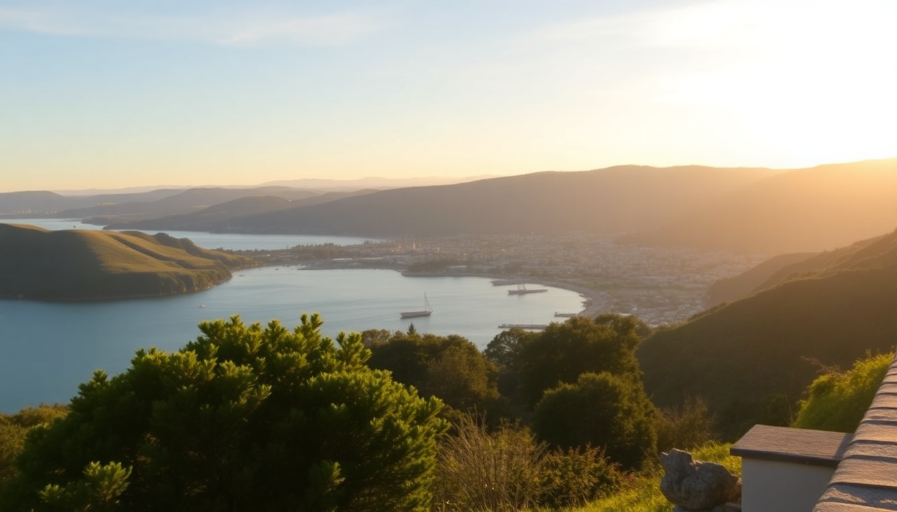

Best Day Trips from Auckland: Wine, Hobbits & Glowworms

I spent three days based in Auckland and managed to tick off Waiheke Island, Hobbiton, and Waitomo—each one a completely different world. Here’s what actually worked, what didn’t, and how to avoid the rookie mistakes I made.
What’s the best way to do Waiheke Island in one day?
The ferry from Auckland’s downtown terminal (Pier 2) gets you to Matiatia Bay in 40 minutes. Skip the car—parking on Waiheke is a nightmare and the island’s hop-on-hop-off bus runs every 30 minutes. I bought my ticket from Fullers at the terminal counter that morning with no issue, but in summer (Dec-Feb) book ahead.
Start at the eastern end and work your way back west:
- Mudbrick Vineyard — Book lunch here at least a week out. The lamb rump and the view back to Auckland are worth the price tag. Their Reserve Syrah is the one to order.
- Cable Bay Vineyards — Better for a late-afternoon glass. The tasting flight is NZ$20 and they pour a great Chardonnay. Sit on the lawn if it’s fine.
- Oneroa Village — Grab a coffee at Vino Caffè if you need a break from wine. The bakery does a solid mince pie.
- Onetangi Beach — The island’s best swimming beach. It’s a 15-minute walk from the bus stop. Water is cold even in January.
- Wild on Waiheke — Skip it. Overpriced, crowded, and the wine is average. The archery range is fun but not worth the detour.
The last ferry back to Auckland is usually 7:30 PM. If you miss it, the 9 PM runs only on weekends. I nearly learned that the hard way.
Is Hobbiton actually worth the hype?
Yes, but only if you go early. I booked the 8:40 AM tour and had the Shire almost to myself for the first 45 minutes. By 10:30, the busloads from Rotorua start arriving, and you’re shuffling shoulder-to-shoulder down Bagshot Row.
The set is immaculate—real gardens, working chimneys, and the Green Dragon Inn serves a proper ale (the Southfarthing Ginger Beer is non-alcoholic but tastes better than the beer). Our guide, a local from Matamata, pointed out that the oak tree above Bag End is actually a steel-and-silicone fake that weighs 12 tons. That kind of detail makes the NZ$89 ticket feel justified.
Practical tips:
- Drive yourself if you can. It’s 2 hours from Auckland via State Highway 1 and 27. The parking is free and right at the visitor centre.
- Skip the lunch at the on-site café. It’s overpriced sandwiches. Instead, stop at The Redoubt Bar & Eatery in Matamata town (5 minutes south) for a proper steak pie.
- Book the Evening Banquet Tour if you’re a hardcore fan. It’s NZ$195 and includes a feast in the Green Dragon, but you lose the daylight photos.
- Bring a rain jacket. The Shire is open farmland and the wind cuts through. I saw people shivering in hoodies.
Can you combine Waitomo and Hobbiton in one day?
You can, but I wouldn’t recommend it unless you’re okay with 10 hours of driving. They’re 90 minutes apart by car, and both tours run on fixed schedules. I tried the combo tour from Auckland (NZ$259) and felt rushed—45 minutes at Hobbiton, then a 2-hour drive to Waitomo for a 50-minute cave walk. You don’t get to linger.
If you have a rental car, a better plan is: Hobbiton at 8:40 AM, lunch in Matamata, then drive to Waitomo for a 2:30 PM tour. You’ll be back in Auckland by 8 PM. That’s a long day but doable.
Waitomo-specific advice:
- The Ruakuri Cave is better than the main Waitomo Glowworm Cave. Fewer crowds, more glowworms, and a 45-minute walking tour that includes a spiral ramp and a waterfall. Book direct on their website for NZ$79.
- The Black Water Rafting Co. offers the best adventure option: 3 hours of tubing, climbing, and jumping through waterfalls. NZ$160 and you get a wetsuit and helmet. Not for claustrophobes.
- The Spellbound Tour is the budget pick at NZ$65. Smaller groups, and you see two caves. The glowworm density is actually higher than the main cave.
- Don’t eat at the Waitomo Caves Café. The pies are reheated. Drive 10 minutes to The Waitomo Village Chalets for a decent burger and cold beer.
What’s the most efficient way to visit all three from Auckland?
If you have only two days, do Waiheke on one day and combine Hobbiton + Waitomo on the second. That’s what I ended up doing, and it worked because I drove.
Day 1: Waiheke Island
- 8:00 AM ferry from Auckland
- 8:45 AM bus to Mudbrick for breakfast
- 11:00 AM Cable Bay tasting
- 1:00 PM Onetangi Beach swim
- 3:00 PM Oneroa walk
- 5:30 PM ferry back
Day 2: Hobbiton + Waitomo
- 6:30 AM leave Auckland
- 8:40 AM Hobbiton tour
- 10:30 AM coffee in Matamata
- 12:00 PM drive to Waitomo
- 2:30 PM Ruakuri Cave tour
- 4:30 PM drive back to Auckland
- 8:00 PM arrive
Book the ferry and Hobbiton tickets at least two weeks ahead in summer. Waitomo tours rarely sell out, but the early slots do.
Where should I stay in Auckland for these day trips?
Base yourself near the Britomart transport hub. You’ll walk to the ferry terminal, train station, and bus depot. I stayed at Hotel Britomart—it’s modern, quiet, and the restaurant (Kingi) does an excellent smoked fish breakfast. Rooms start around NZ$280 in shoulder season.
Other solid options:
- The Grand by SkyCity — Right on Queen Street, close to the SkyBus stop from the airport. Rooms are dated but clean, and the casino noise doesn’t reach the upper floors.
- M Social Auckland — Budget-friendly and a 5-minute walk to the ferry. The rooms are tiny but the location is unbeatable.
- QT Auckland — Splurge option. Rooftop bar with harbour views, and you can see your ferry arrive from the lobby.
For parking, don’t bother with street parking. Use the Victoria Street Car Park (NZ$30/day) or book a hotel with included parking—Hotel Britomart doesn’t, but the Wilson Parking next door is NZ$25 overnight.
FAQ
Is Waiheke Island doable without a car? Yes, easily. The hop-on-hop-off bus (Fullers, NZ$25) covers all the main vineyards and beaches. The bus runs every 30 minutes in summer, hourly in winter. Walking between vineyards is possible but the hills are steep—I wouldn’t recommend it after a few tastings.
Can I visit Hobbiton in winter? Yes, and it’s actually better. June-August means fewer crowds and the grass stays green year-round. The tour runs rain or shine. Just bring a waterproof jacket and sturdy shoes—the paths get muddy. The Green Dragon Inn has a fire going, which makes the drink stop feel cozier.
Do I need to book Waitomo glowworm tours in advance? For the main Waitomo Glowworm Cave, yes—especially in summer. Book at least a week ahead. For Ruakuri Cave or Spellbound, you can usually walk up on the day, but the morning slots (9 AM-11 AM) fill up. I booked Ruakuri the night before with no problem in March.
Conclusion
- Waiheke Island is best done self-guided with the hop-on-hop-off bus. Skip Wild on Waiheke, book Mudbrick for lunch.
- Hobbiton is worth the money if you take the first tour of the day. Drive yourself, skip the on-site lunch.
- Waitomo is underwhelming if you only do the main cave. Spend the extra NZ$10 on Ruakuri Cave for a better experience.
- Combine Hobbiton and Waitomo only if you have a rental car and a full day. The combo tours from Auckland are too rushed.
- Stay near Britomart in Auckland. It saves you 30 minutes of commute each day and puts you next to the ferry.